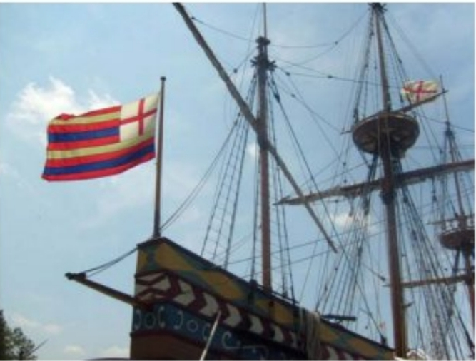

The Susan B. Constant was flagship of the fleet of three small ships that brought settlers to Jamestown, the first successful English Colony in the new world. This is a replica housed near Jamestown, Virginia.